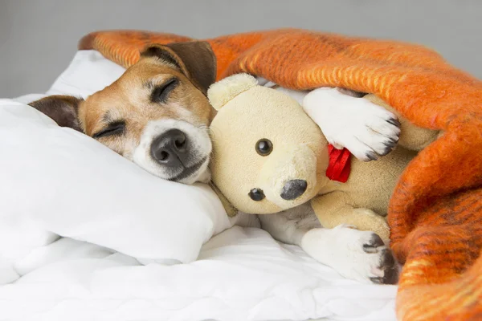
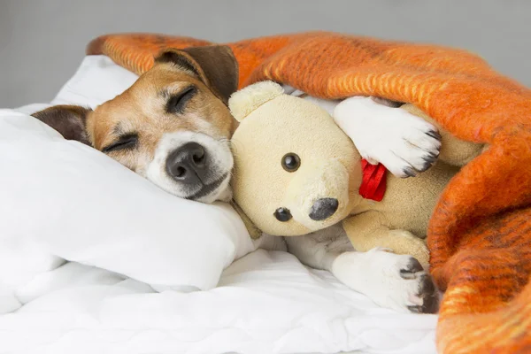

perritos durmiendo con ositos
titulo escrito con h2
titulo escrito con h3
titulo escrito con h4
titulo escrito con h5
titulo escrito con h6
Si tu perro duerme hecho un ovillo con las patas metidas debajo de él, a menudo es porque se siente seguro y protegido. Algunos perros también duermen así cuando tienen frío. De lado. Cuando los perros duermen de lado, se sienten cómodos y a gusto.
Porqué mi perro tiene pesadillas y qué hacer al respecto
 
